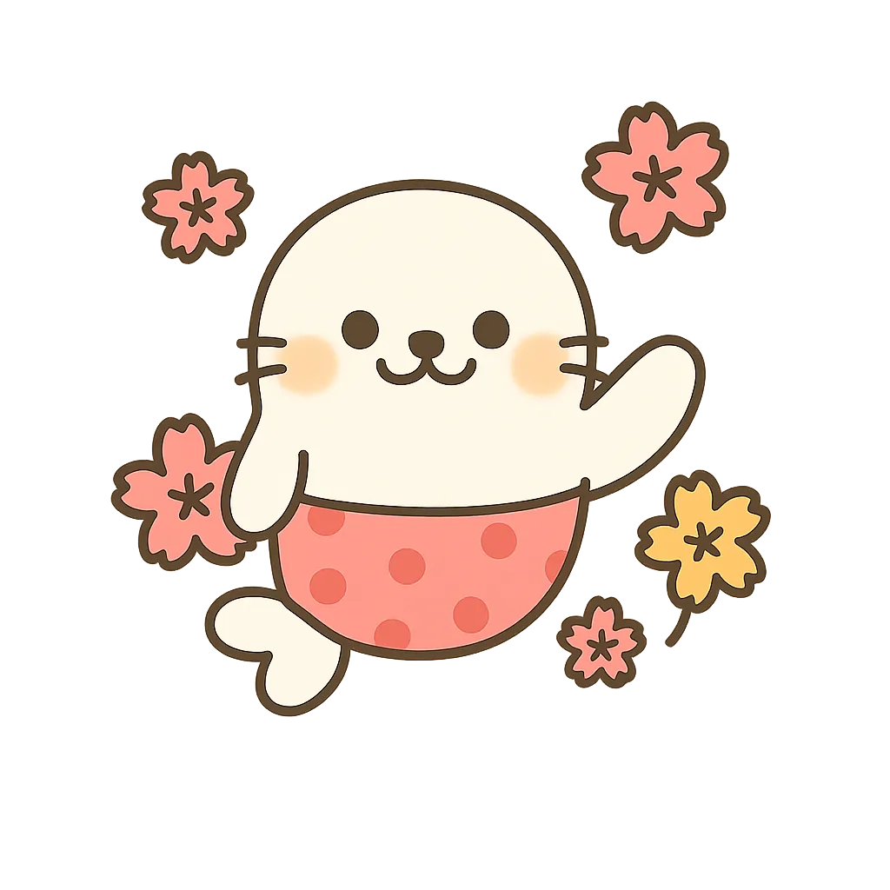
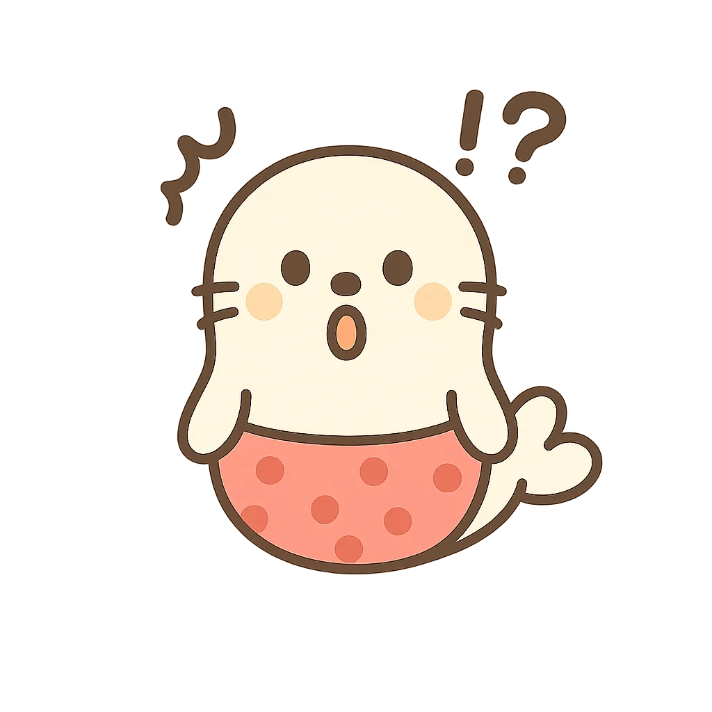
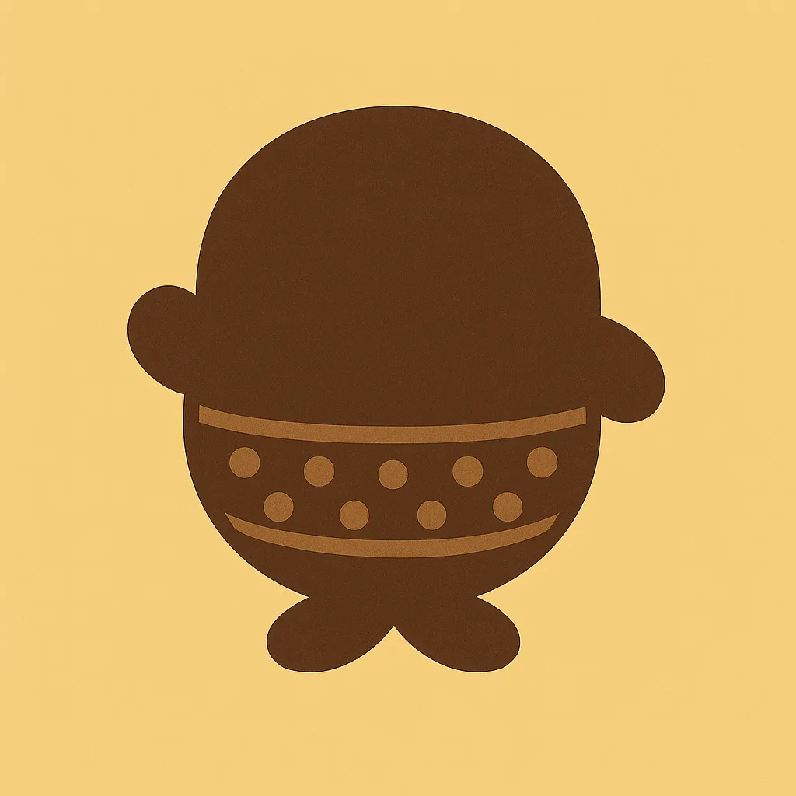
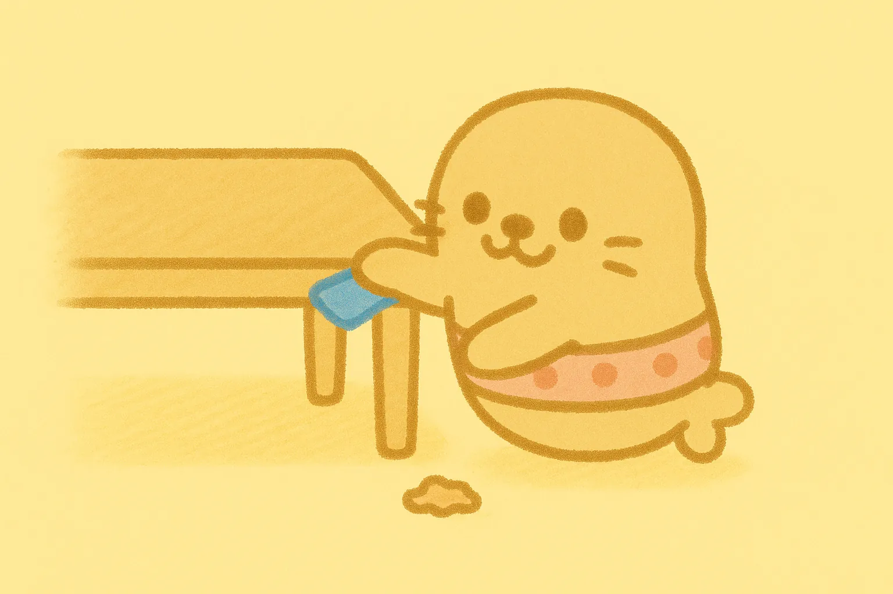
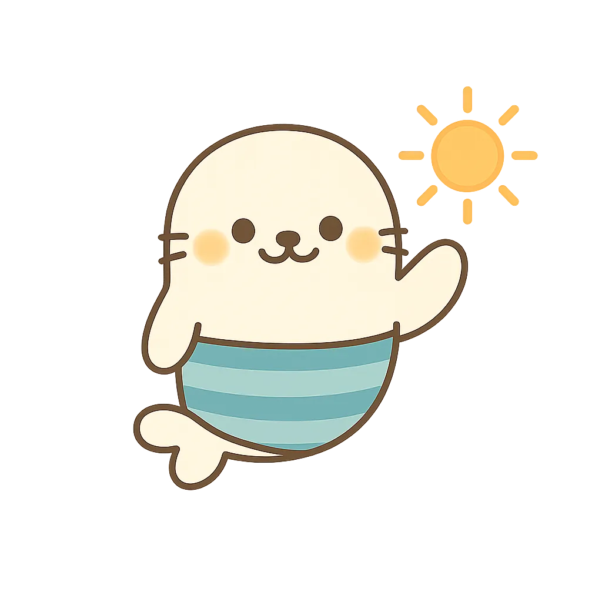
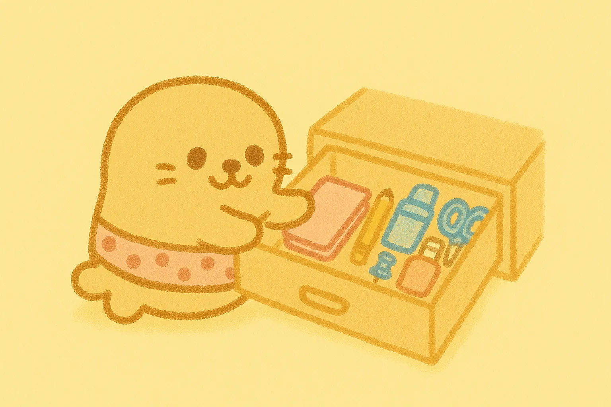
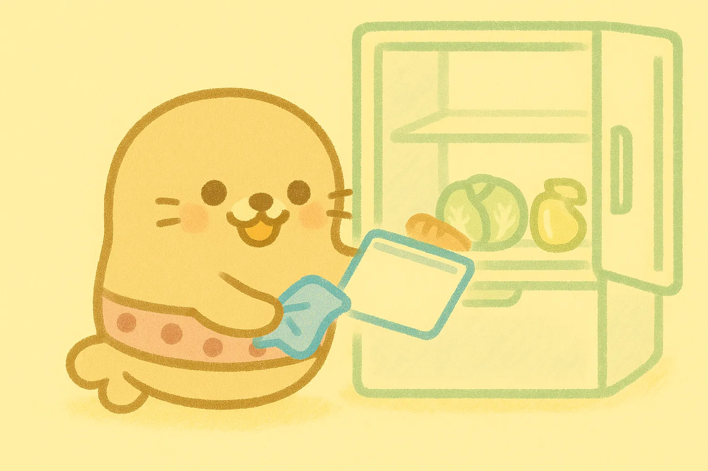
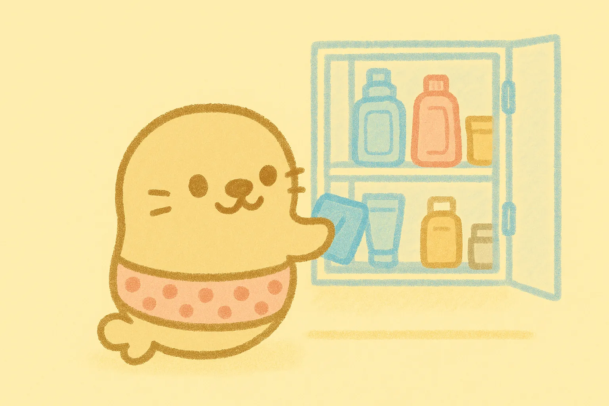

1日1ミッション、ゆる〜く整う暮らし。
あざらしの相棒・ちょこまるが、
今日のひとつを選んでくれる片付け習慣化アプリ。

片付けが続かないのは、
あなたのせいじゃないかもしれません。

「化粧品のフタを閉める」「引き出しを1段だけ」など、3分で終わるサイズの提案。忙しい日も続けられる。

何を片付けるかは、ちょこまるが提案。「別のミッションを表示」ボタンで気軽に切り替え。お片付けモード/断捨離モードも選べる。
ミッションを完了すると、ちょこまるの日記が更新。手描き風のイラストと、ちょこまるのつぶやきが見られる。


ちょこまるは、片付けが苦手なあなたのための相棒。
完璧を求めず、できた小さなことを
一緒に喜んでくれます。
ミッションを終えると、その日のことを
日記に書き残してくれます。
ちょこまる日記の例

きょうのおかたづけ
ぴかぴかにできたよ

ちょこっと、できた

すっきり〜!
「ミッションを達成していくゲーム感覚で部屋の片付けができる。」
— 炊きたての栗ご飯さん
「あざらし日記が可愛くて、日記見たさで頑張れてます!」
— ポンコ・ポンコさん
「入力する手間がなくていいです!」
— ひまわり🌻☀️さん
ちょこまるが今日のミッションを提案してくれます。
気が向いたらやる。気が向かなければスキップ。それでいい。
完了したら、ちょこまる日記でその日のことを残してくれます。